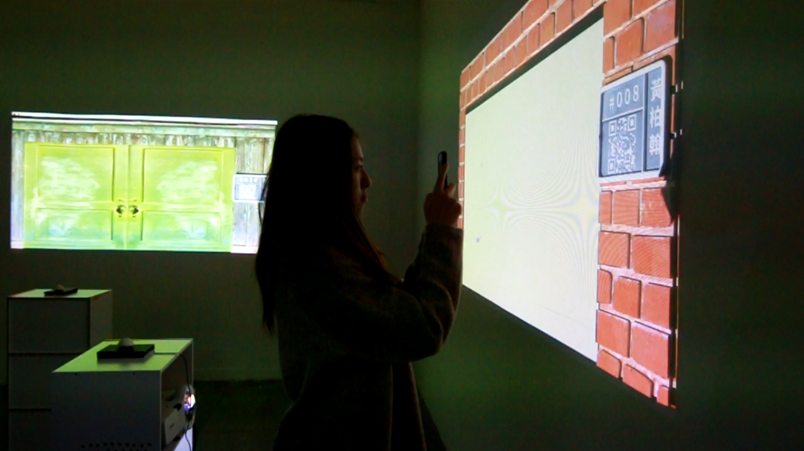
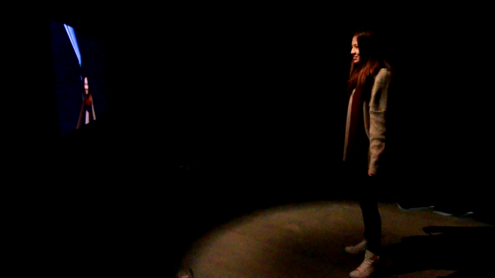
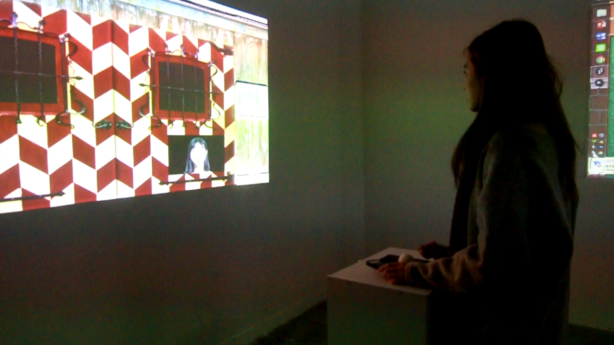
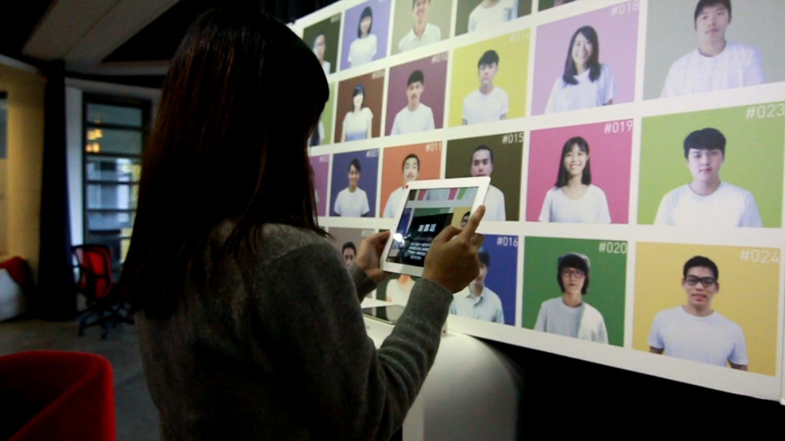

2015
Interaction Installation
Circuit




< Previous
< Previous
- We collected 35 memories people treasured and used these scenes to arouse the
audience’s collective memories or newly create mutual experiences.
- We built a digital interface showing random doors; pressing a physical button would allow the user to view a video representing another’s memory.
- Processing, After Effect, Photoshop, Webcam, Projection Mapping, AR, QuickMark, Abrosoft Fantamorph
- We built a digital interface showing random doors; pressing a physical button would allow the user to view a video representing another’s memory.
- Processing, After Effect, Photoshop, Webcam, Projection Mapping, AR, QuickMark, Abrosoft Fantamorph